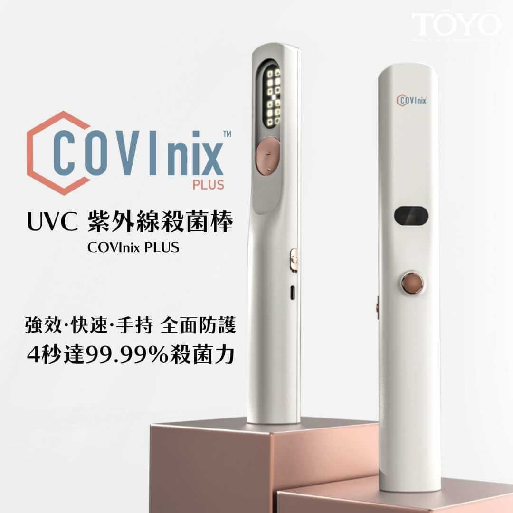
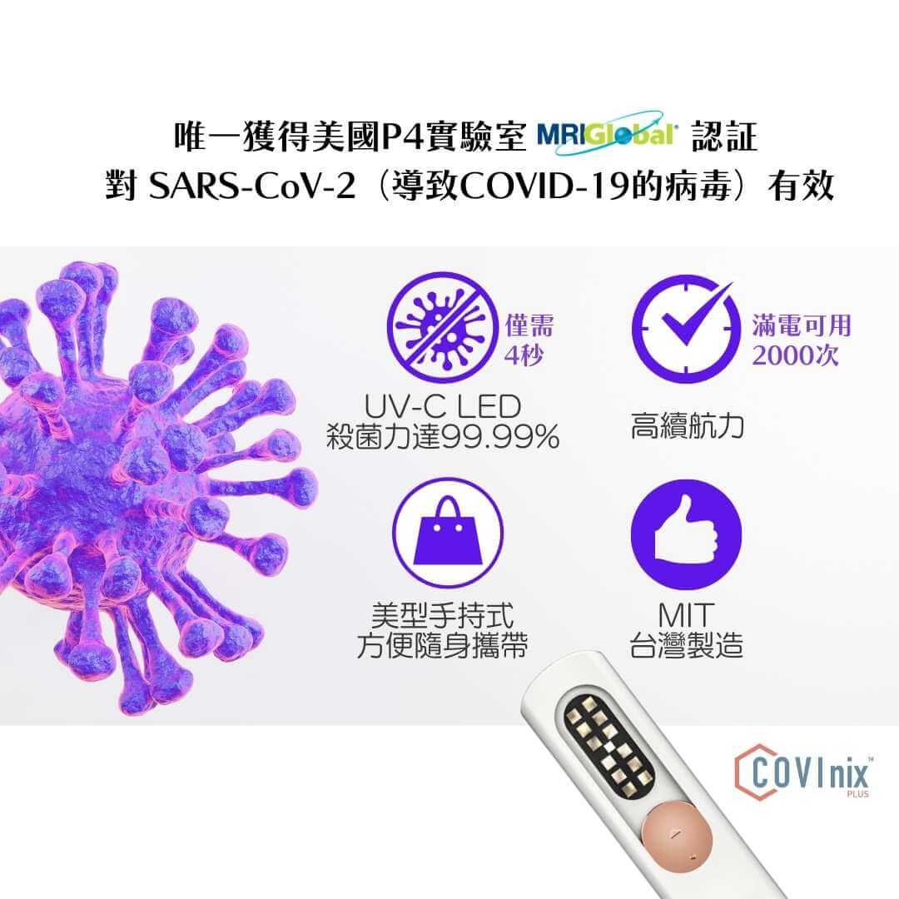
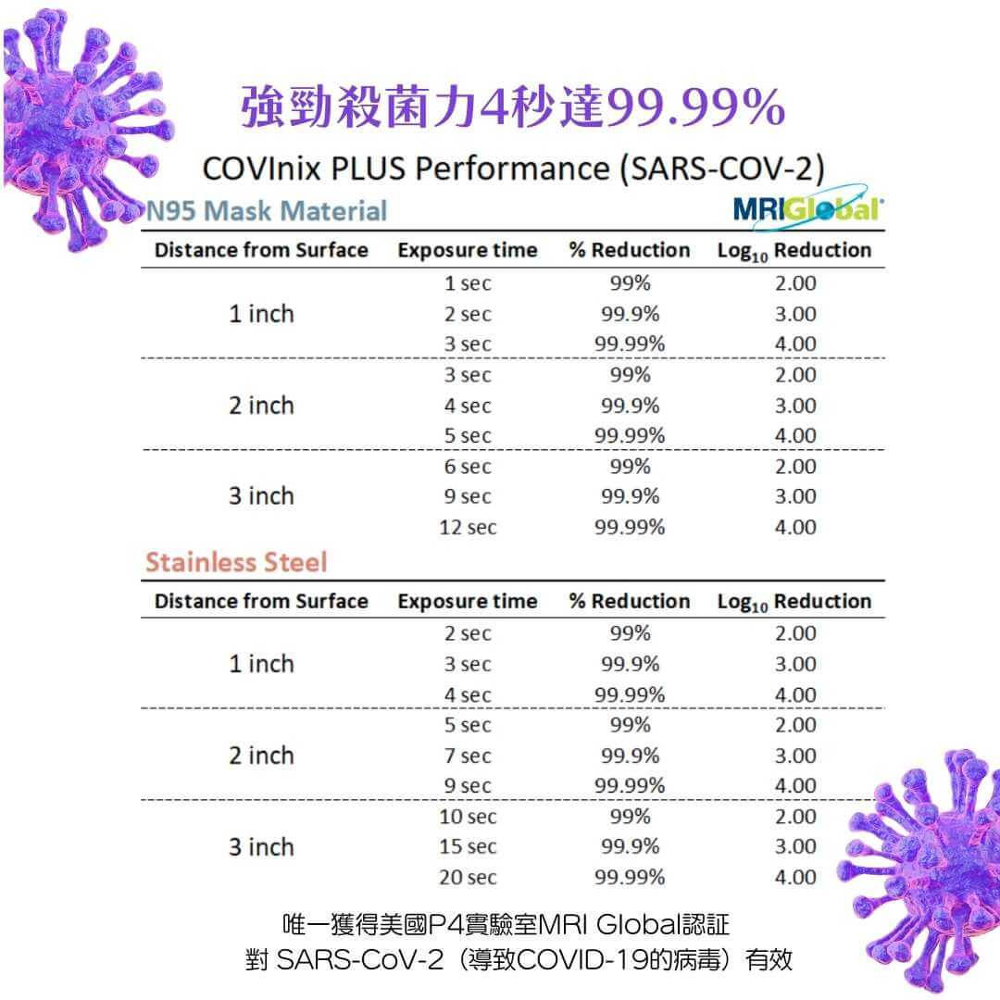
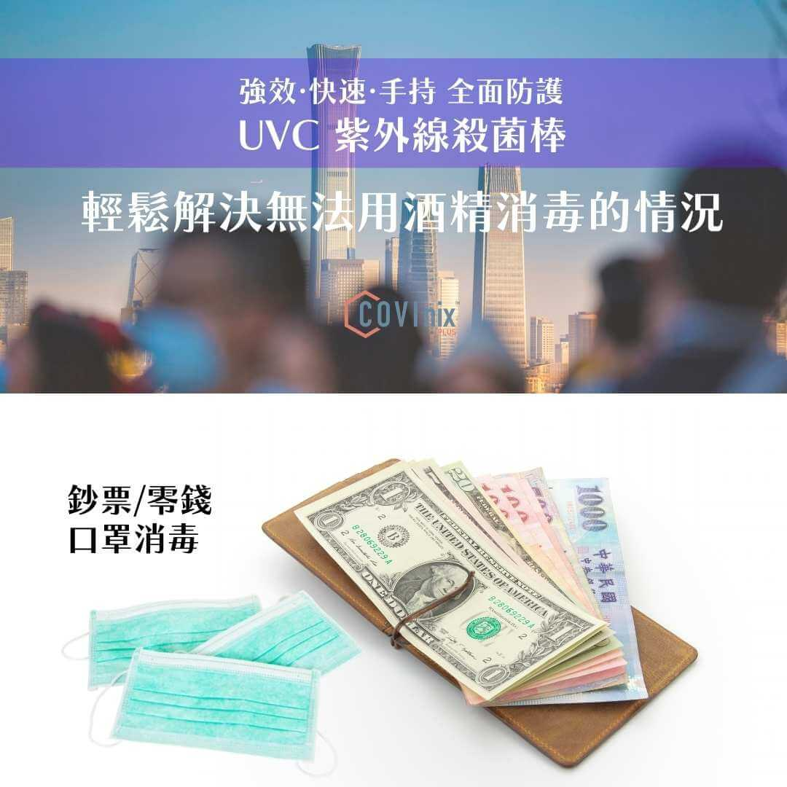
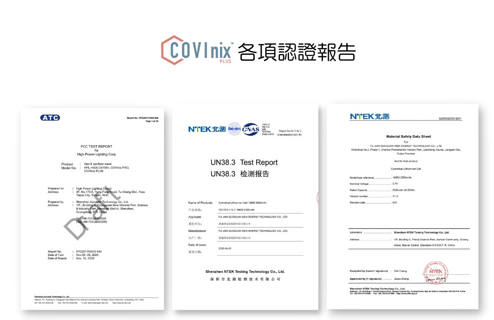
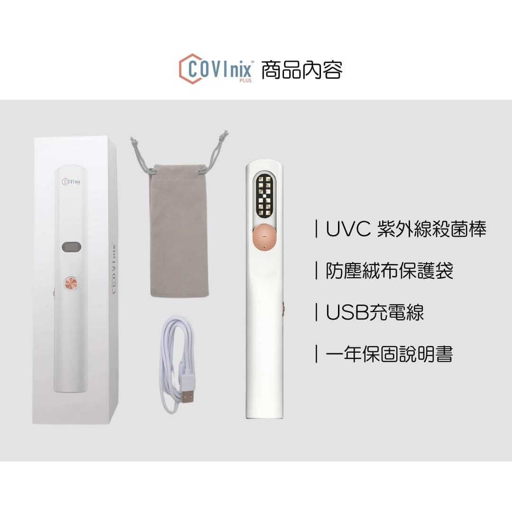

美國COVInix PLUS UV-C紫外線殺菌棒
- 唯一獲得美國P4實驗室MRI GIobal認証，對 SARS-CoV-2（導致COVID-19的病毒）有效
- 強效、快速、手持、全面防護
- UV-C LED殺菌力4秒達99.99%
- 輕鬆解決無法用酒精消毒的情況







建議售價：4500元
聯絡我們
商品描述
唯一獲得美國P4實驗室MRI GIobal認証，對 SARS-CoV-2（導致COVID-19的病毒）有效，強效、快速、手持、全面防護，輕鬆解決無法用酒精消毒的情況。
【商品特性】
- 可滅除病毒、黴菌、細菌、孢子
- UV-C LED殺菌力達99.99%
- 一體化手持美型設計，方便隨身攜帶
- 高續航力，充滿電可使用2000次
- 20mV高強度 UVC LED專利認證
- 設有安全機制，翻轉角度超過 90度自動斷電
- 搭配一顆可見藍光，可看到正在消毒的區域
- MIT台灣製造
【生活應用】
殺菌消臭作用於鈔票/零錢/口罩/外送/外帶食物/食用器具/生鮮食品/水果蔬菜/文件/信件/包裹/3C產品/植栽/木頭桌面/金屬表面等
【使用方式】
- UV-C LED燈對著殺菌物體，最佳殺菌距離 3-8cm
- 電源開關推至"ON"
- 滑開保護滑蓋
- 按下殺菌按鈕(可自由設定殺菌秒數，每按一下可增加5秒，可設定範圍10~90秒)
- 倒數殺菌完畢即自動斷電
【使用注意】
請勿照射眼睛，人體皮膚過量照射會導致黑色素產生。
商品內容
- UVC 紫外線殺菌棒1入
- 防塵絨布保護袋1入
- USB充電線1入
- 一年保固說明書1入
商品規格
| 品名 | COVInix PLUS UV-C紫外線殺菌棒 |
| 重量 | 169g |
| 尺寸 | 36 x 250 mm |
| 波長 | Deep UVC265-278nm |
| 電池規格 | 2500mA |
| 燈珠顆數 | 12顆UVC+1顆UVA |
| 額定功率 | 12W |
| 輸入電壓電流 | 5V/1A |
| 充電規格 | 支援USB/ Type C充電 |
| 保固時間 | 1年 |